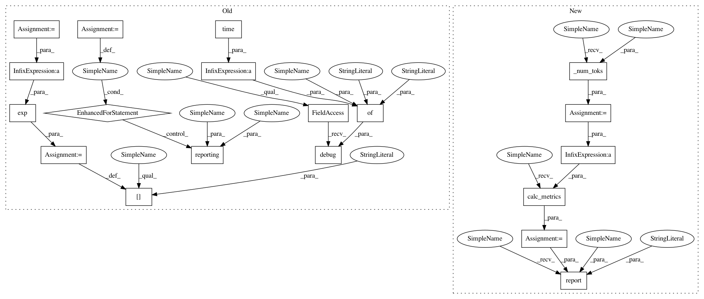

6aad1de658a933d3fa376f7fe9abf419da8a8bd2,python/baseline/pytorch/lm/train.py,LanguageModelTrainerPyTorch,test,#LanguageModelTrainerPyTorch#Any#Any#Any#,38
Before Change
total_loss += self.crit(output, y).data
if hidden is not None:
hidden = self.repackage_hidden(hidden)
iters += nctx
self.valid_epochs += 1
avg_loss = float(total_loss) / iters / batchsz
metrics["avg_loss"] = avg_loss
metrics["perplexity"] = np.exp(avg_loss)
duration = time.time() - start_time
print("%s time (%.3f sec)" % (phase, duration))
self.log.debug({"phase": phase, "time": duration})
for reporting in reporting_fns:
reporting(metrics, self.valid_epochs, phase)
return metrics
def train(self, ts, reporting_fns):
start_time = time.time()
After Change
inputs = self.model.make_input(batch_dict)
y = inputs.pop("y")
output, hidden = self.model(inputs, hidden)
toks = self._num_toks(batch_dict)
total_loss += self.crit(output, y).item() * toks
total_toks += toks
if hidden is not None:
hidden = self.repackage_hidden(hidden)
metrics = self.calc_metrics(total_loss, total_toks)
self.report(
epoch, metrics, start,
phase, "EPOCH", reporting_fns
)
return metrics
def train(self, ts, reporting_fns):
start = time.time()
In pattern: SUPERPATTERN
Frequency: 3
Non-data size: 19
Instances
Project Name: dpressel/mead-baseline
Commit Name: 6aad1de658a933d3fa376f7fe9abf419da8a8bd2
Time: 2018-11-26
Author: blester125@users.noreply.github.com
File Name: python/baseline/pytorch/lm/train.py
Class Name: LanguageModelTrainerPyTorch
Method Name: test
Project Name: dpressel/mead-baseline
Commit Name: 6aad1de658a933d3fa376f7fe9abf419da8a8bd2
Time: 2018-11-26
Author: blester125@users.noreply.github.com
File Name: python/baseline/tf/lm/train.py
Class Name: LanguageModelTrainerTf
Method Name: test
Project Name: dpressel/mead-baseline
Commit Name: 6aad1de658a933d3fa376f7fe9abf419da8a8bd2
Time: 2018-11-26
Author: blester125@users.noreply.github.com
File Name: python/baseline/pytorch/lm/train.py
Class Name: LanguageModelTrainerPyTorch
Method Name: test
Project Name: dpressel/mead-baseline
Commit Name: 6aad1de658a933d3fa376f7fe9abf419da8a8bd2
Time: 2018-11-26
Author: blester125@users.noreply.github.com
File Name: python/baseline/dy/lm/train.py
Class Name: LanguageModelTrainerDynet
Method Name: test